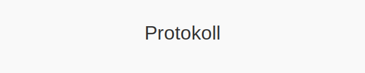
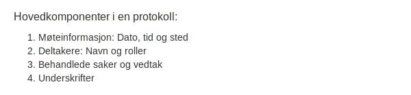
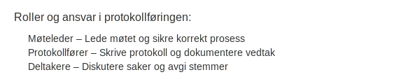
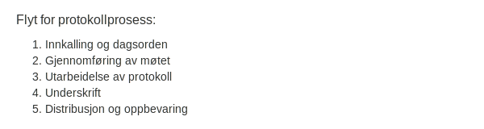

Protokoll er det formelle dokumentet som dokumenterer vedtak, diskusjoner og beslutningsprosesser i generalforsamlinger, styremøter og andre formelle selskapsorganer. En korrekt ført protokoll er avgjørende for å sikre sporbarhet og gjennomsiktighet i regnskapet.

Hva er protokoll?
En protokoll er et offisielt møtereferat som dokumenterer hvem som var til stede, hvilke saker som ble behandlet, diskusjoner, vedtak og stemmeresultater. Protokoller er et lovpålagt krav for flere typer formelle møter i norske selskaper, blant annet ordinære og ekstraordinære generalforsamlinger og styremøter.
Formelle krav til protokoll
For å oppfylle lovkrav må protokollene inneholde følgende:
- Skal føres for både ordinære og ekstraordinære generalforsamlinger (se Hva er generalforsamling?).
- Skal føres for styremøter i henhold til Aksjeloven.
- Må angi dato, sted, deltakerliste, behandlede saker, vedtak og stemmeresultater.
- Protokollen skal underskrives av møteleder og minst ett annet møtevalgt medlem.
- Oppbevares i minst 10 år etter regnskapsårets slutt i henhold til Bokføringsloven.
Hovedkomponenter i en protokoll
| Komponent | Beskrivelse |
|---|---|
| Møteinformasjon | Dato, tid og sted |
| Deltakere | Navn på møtedeltakere og deres roller |
| Behandlede saker | Overskrift og innhold for hver sak |
| Vedtak og stemmer | Resultat av avstemming |
| Underskrifter | Signaturer fra møteleder og møtevalgte medlemmer |

Roller og ansvar
| Rolle | Ansvar |
|---|---|
| Møteleder | Lede møtet og sikre korrekt prosess |
| Protokollfører | Skrive protokoll og dokumentere vedtak |
| Styremedlemmer | Diskutere saker og avgi stemmer |
| Aksjonærer | Delta, diskutere og stemme |

Protokollprosessen
- Innkalling og dagsorden: Distribuer innkalling i samsvar med Vedtekter.
- Gjennomføring av møtet: Lede møtet, behandle saker og registrere diskusjoner.
- Utarbeidelse av protokoll: Protokollfører skriver referat med alle nødvendige detaljer.
- Underskrift: Møteleder og utpekte medlemmer underskriver protokollen.
- Distribusjon og oppbevaring: Arkiver protokollen i samsvar med Bokføringsloven og Oppbevaring av regnskapsmateriale.

Oppbevaring av protokoll
I henhold til Bokføringsloven skal protokoller oppbevares i minst ti år etter regnskapsårets slutt. Protokoller regnes som regnskapsmateriale og må være tilgjengelige ved bokettersyn.
Beste praksis
- Standardiser maler: Bruk en fast mal for å sikre konsistens.
- Digital arkivering: Vurder elektroniske protokoller og verifiser at digitale signaturer er gyldige.
- Versjonskontroll: Sørg for at endringer er dokumentert og tidligere versjoner arkiveres.
- Sikker oppbevaring: Beskytt protokoller mot uautorisert tilgang og datatap.
- Regelmessig opplæring: Gi opplæring i korrekt protokollføring for nøkkelpersonell.